Fixed Income
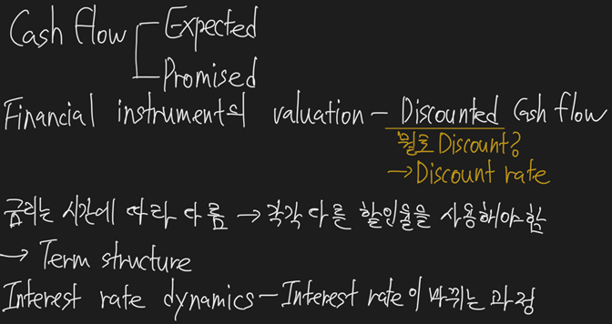
LOS 32.a: Describe relationships among spot rates, forward rates, yield to maturity, expected and realized returns on bonds, and the shape of the yield curve.
Spot rates
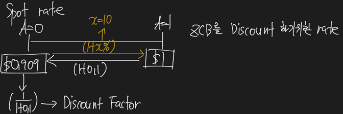
Spot rates are the annualized market interest rates for a single payment to be received in the future. Generally, we use spot rates for government securities (risk-free) to generate the spot rate curve.
The spot interest rate is the yield to maturity of a zero-coupon bond.
The term structure of spot rates is known as the spot curve. The shape and level of the spot curve changes continuously with the market prices of bonds.
Forward rates
The annualized interest rate on a loan to be initiated at a future period is called the forward rate for that period.
The term structure of forward rates is called the forward curve.
Forward curves and spot curves are mathematically related.
Yield to maturity
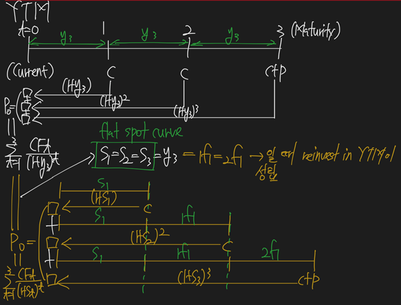
YTM of a zero-coupon bond with maturity T is the spot interest rate for a maturity of T.
For a coupon bond, if the spot rate curve is not flat, the YTM will not be the same as the spot rate.
The yield on a coupon bond is a weighted average of three spot rates.
Expected and realized returns on bonds
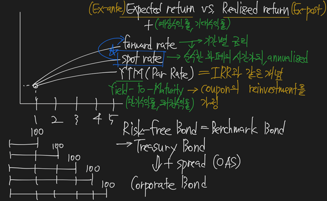
Expected return is the ex-ante holding period return that a bond investor expects to earn. The expected return will be equal to the bond’s yield only when all three of the following are true:
- The bond is held to maturity
- All payments (coupon and principal) are made on time and in full
o option-free, no default risk, no prepayment risk
- All coupons are reinvested at the original YTM
o If the yield curve is not flat, the coupon payments will not be reinvested at the YTM and the expected return will differ from the yield.
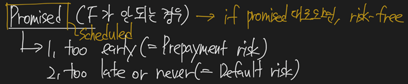
Realized return on a bond refers to the actual return that the investor experiences over the investment’s holding period. Realized return is based on actual reinvestment rates.
LOS 32.b: Describe the forward pricing and forward rate models and calculate forward and spot prices and rates using those models.
The forward pricing model
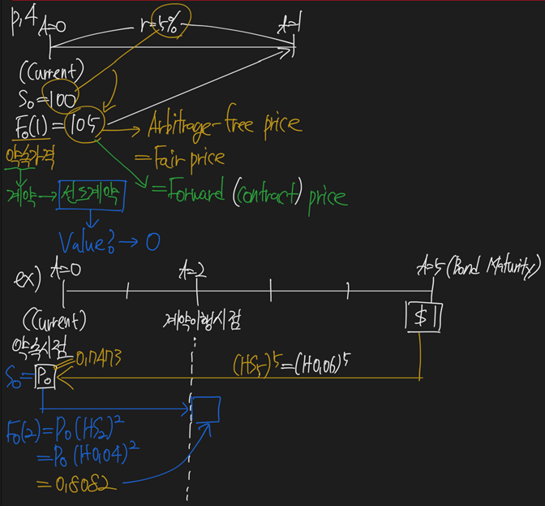
Forward price는 현재 spot price에 투자하는 대신 무위험 수익률을 노렸을 경우의 가치와 동일하다. 그래서 forward price를 risk-free rate으로 할인하면 현재 시점의 spot price와 같은 값이 나오는 것. 이게 arbitrage-free pricing
현재 시점에서 Forward contract value는 0
The forward rate model
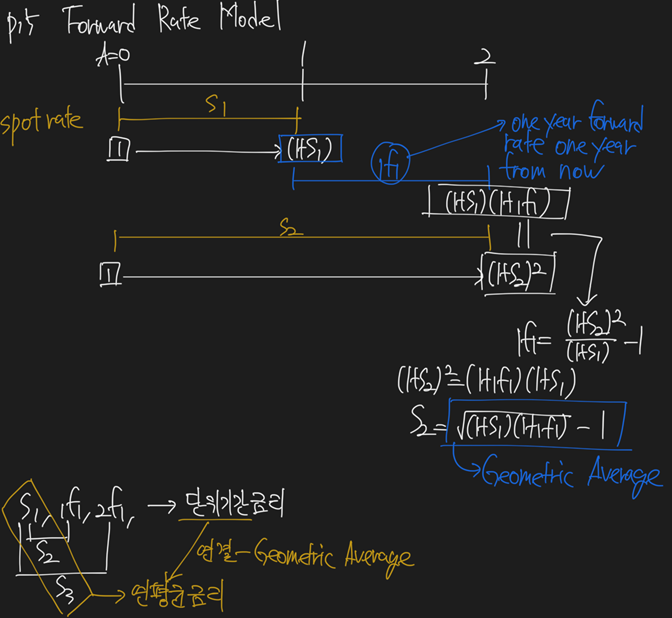
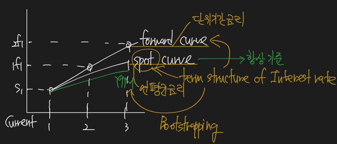
This model is useful because it illustrates how forward rates and spot rates are interrelated.
Spot rate과 forward rate은 geometric average 관계
Spot curve가 upward sloping이면 forward rate은 항상 spot rate보다 크고, 그러므로 forward curve는 spot curve 위에 위치한다. Spot curve가 downward sloping이면, forward rate은 spot rate보다 항상 작고, 그러므로 forward curve는 spot curve 밑에 위치한다.
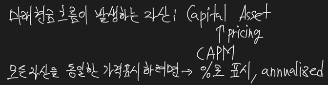
LOS 32.c: Describe how zero-coupon rates (spot rates) may be obtained from the par curve by bootstrapping.
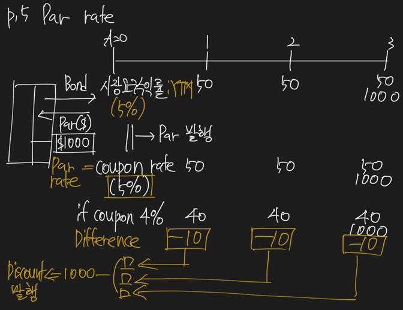
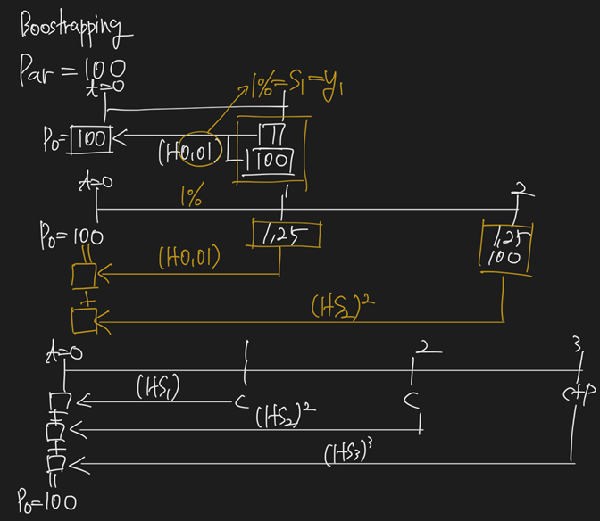
A par rate is the yield to maturity of a bond trading at par. Generally, par curve refers to the par rates for government or benchmark bonds.
By using a process called bootstrapping, spot rates or zero-coupon rates can be derived from the par curve.
LOS 32.d: Describe the assumptions concerning the evolution of spot rates in relation to forward rates implicit in active bond portfolio management.
Relationships between spot and forward rates
For an upward-sloping spot curve the forward rate rises as increases. For downward-sloping spot curve, the forward rate declines as increases. For an upward-sloping spot curve, the forward curve will be above the spot curve. Conversely, when the spot curve is downward sloping, the forward curve will be below it.
The spot rate for a long-maturity security will equal the geometric mean of a series of one-year forward rates.
Forward price evolution
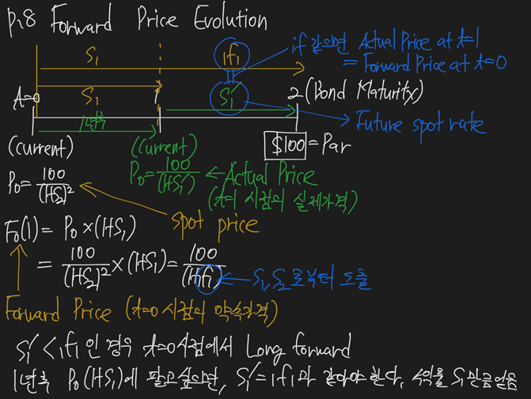
Forward rate는 현재 상황에서 관찰된 미래 시점의 단위기간 금리일 뿐, 시간이 지나면 변화한다. 그러므로 forward contract들도 expiration이 되면 해당 시점의 contract value와 forward price가 다를 수 있다. 만기 시점의 contract value = forward price이려면, 계약 시점에 관찰된 forward rate가 미래인 만기 시점에 spot rate로 정확히 실현되어야 한다.
If the future spot rates actually evolve as forecasted by the forward curve, the forward price will remain unchanged. Therefore, a change in the forward price indicates that the future spot rate(s) did not conform to the forward curve. When spot rates turn out to be lower (higher) than implied by the forward curve, the forward price will increase (decrease). A trader expecting lower future spot rates (then implied by the current forward rates) would purchase the forward contract to profit from its appreciation.
For a bond investor, the return on a bond over a one-year horizon is always equal to the one-year risk-free rate if the future spot rates evolve as predicted by today’s forward curve. If the spot curve one year from today is not the same as that predicted by today’s forward curve, the return over the one-year period will differ, with the return depending on the bond’s maturity.
An active portfolio manager will try to outperform the overall bond market by predicting how the future spot rates will differ from those predicted by the current forward curve.
If an investor believes that future spot rates will be lower than corresponding forward rates, then she will purchase bonds (at a presumably attractive price) because the market appears to be discounting future cash flows at “too high” of a discount rate.
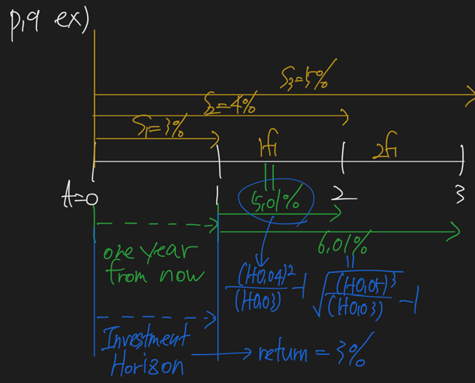
LOS 32.e: Describe the strategy of riding the yield curve.
Riding the yield curve (YTM curve)
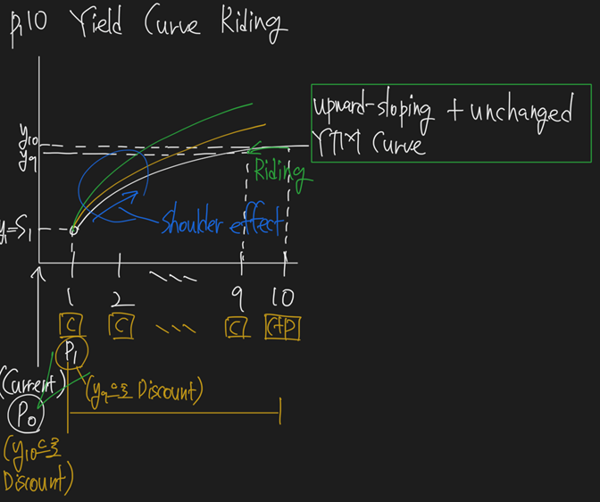
With an upward-sloping interest rate term structure, investors seeking superior returns may pursue a strategy called riding the yield curve (also known as rolling down the yield curve). Under this strategy, an investor will purchase bonds with maturities longer than his investment horizon. In an upward-sloping yield curve, shorter maturity bonds have lower yields than longer maturity bonds. As the bond approaches maturity, it is valued using successively lower yields and, therefore, at successively higher prices.
If the yield curve remains unchanged over the investment horizon, riding the yield curve strategy will produce higher returns than a simple maturity matching strategy, increasing the total return of a bond portfolio. The greater the difference between the forward rate and the spot rate, and the longer the maturity of the bond, the higher the total return. (shoulder effect)
LOS 32.f: Explain the swap rate curve and why and how market participants use it in valuation.
The swap rate curve
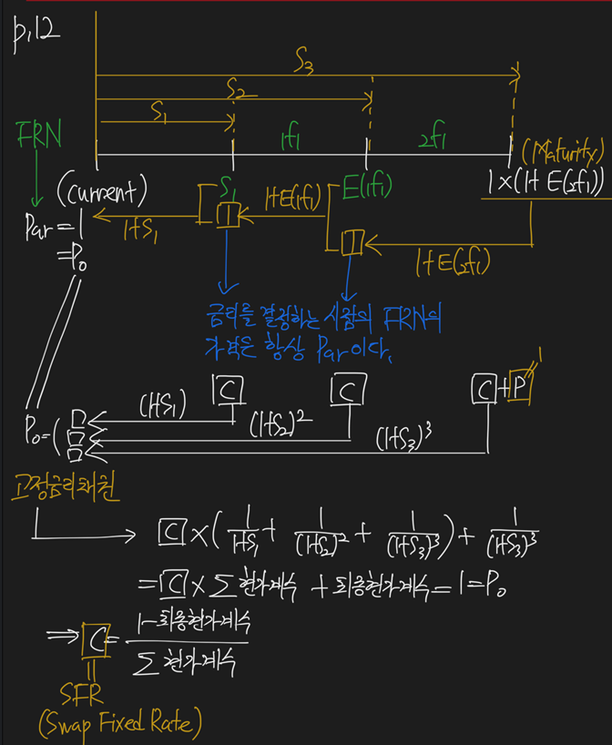
In a plain vanilla interest rate swap, one party makes payments based on a fixed rate while the counterparty makes payments based on a floating rate. The fixed rate in an interest rate swap is called the swap fixed rate or swap rate.
LOS 32.g: Calculate and interpret the swap spread for a given maturity.
Swap spread
Swap spread refers to the amount by which the swap rate exceeds the yield of a government bond with the same maturity
Swap spread = SFR – treasury yield
Swap spread는 banking industry의 credit risk를 반영
Swap spreads are almost always positive, reflecting the lower credit risk of governments compared to the credit risk of surveyed banks that determines the swap rate.
I-spread
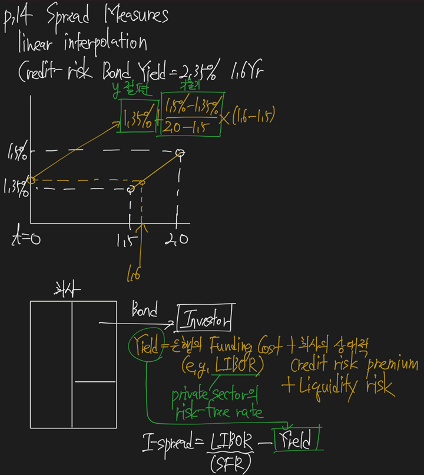
The I-spread for a credit-risky bond is the amount by which the yield on the risky bond exceeds the swap rate for the same maturity. The missing swap rate can be estimated from the swap rate curve using linear interpolation.
I-spread = credit-risky bond yield – SFR
While a bond’s yield reflects time value as well as compensation for credit and liquidity risk, I-spread only reflects compensation for credit and liquidity risks. The higher the I-spread, the higher the compensation for liquidity and credit risk.
LOS 32.h: Describe the Z-spread
The Z-spread
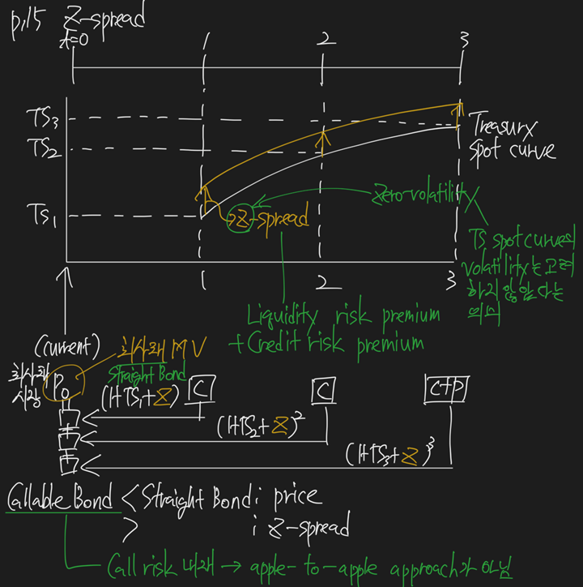
The Z-spread is the spread that, when added to each spot rate on the default-free spot curve, makes the present value of a bond’s cash flows equal to the risky bond’s market price. Therefore, the Z-spread is a spread over the entire spot rate curve.
The term zero volatility in the Z-spread refers to the assumption of zero interest rate volatility. Z-spread is not appropriate to use to value bonds with embedded options.
Los 32.i: Describe the TED and LIBOR-OIS spreads.

TED spread
The TED in TED spread is an acronym that combines the T in T-bill with ED, the ticker symbol for the Eurodollar futures contract.
TED spread = 3-month LIBOR rate – 3-month T-bill rate
Because T-bill are considered to risk free while LIBOR reflects the risk of lending to commercial banks, the TED spread is seen as an indication of the risk of interbank loans. A rising TED spread indicates that market participants believe banks are increasingly likely to default on loans and that risk-free T-bill are becoming more valuable in comparison. The TED spread captures the risk in the banking system more accurately than does the 10-year swap spread.
SFR은 long-term rate
OIS spread
OIS stands for overnight indexed swap. The OIS rate roughly reflects the federal funds rate and includes minimal counterparty risk. 거의 credit risk 없음
The OIS spread is the amount by which the LIBOR rate which includes credit risk exceeds the OIS rate which includes only minimal credit risk. This makes the OIS spread a useful measure of credit risk and an indication of the overall wellbeing of the banking system. Credit risk도 포함되어 있지만, OIS spread는 liquidity를 더 잘 반영함
A low OIS spread is a sign of high market liquidity while a high OIS spread is a sign of high market liquidity while a high OIS spread is a sign that banks are unwilling to lend due to concerns about creditworthiness.
낮을수록 High liquidity, 높을수록 low liquidity
LOS 32.j: Explain traditional theories of the term structure of interest rates and describe the implications of each theory for forward rates and the shape of the yield curve.
Term structure를 해석하려는 theory를 의미
Term structure of interest rates에서 interest rates는 순수한 화폐의 시간가치만 반영한 spot rate, forward rate를 의미
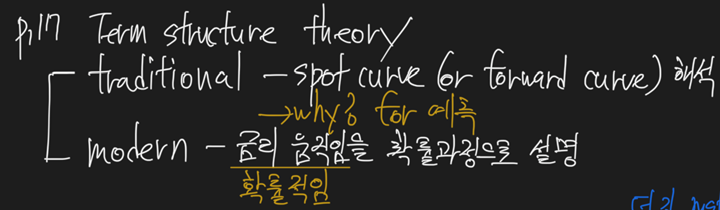
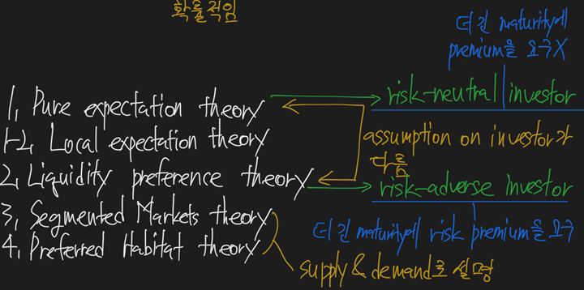
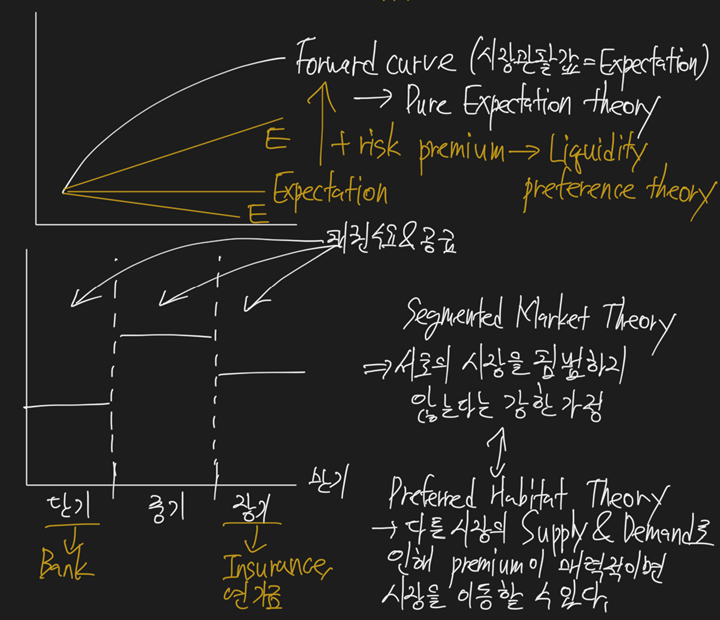
Unbiased expectation theory
Pure expectation theory
We hypothesize that it is investors’ expectations that determine the shape of the interest rate term structure.
Specifically, this theory suggests that forward rates are solely a function of expected future spot rates, and the every maturity strategy has the same expectation return over a given investment horizon. In other words, long-term interest rates equal the mean of future expected short-term rates. This implies that an investor should earn the same return by investing in a five-year bond or by investing in a three-year bond and then a two-year bond after the three-year bond matures. Similarly, an investor with a three-year investment horizon would be indifferent between investing in a three-year bond or in a five-year bond that will be sold two years prior to maturity. The underlying principle behind the pure expectations theory is risk neutrality.
The implications for the shape of the yield curve under the pure expectations theory are:
- if the yield curve is upward sloping, short-term rates are expected to rise.
- if the curve is downward sloping, short-term rates are expected to fall.
- A flat yield curve implies that the market expects short-term rates to remain constant.
Local expectations theory
The local expectations theory preserves the risk-neutrality assumption only for short-term holding periods.
Liquidity preference theory
The liquidity preference theory of the term structure addresses the shortcomings of the pure expectations theory by proposing that forward rates reflects investors’ expectations of future spot rates, plus a liquidity premium to compensate investors for exposure to interest rate risk. The theory suggests that this liquidity premium is positively related to maturity.
The liquidity preference theory states that forward rates are upward-biased estimates of the market’s expectation of future rates because they include a liquidity premium. Therefore, a positive-sloping yield curve may indicate that either: (1) the market expects future interest rates to rise or (2) rates are expected to remain constant (or even fall), but the addition of the liquidity premium results in a positive slope.
기대가 어떻든, liquidity premium이 있으니까 positive-sloping
Segmented markets theory
The shape of the yield curve is determined by the preferences of borrowers and lenders, which drives the balance between supply of and demand for loans of different maturities. This is called the segmented markets theory because the theory suggests that the yield at each maturity is determined independently of the yields at other maturities; we can think of each maturity to be essentially unrelated to other maturities.
The segmented markets theory supposes that various market participants only deal in securities of a particular maturity because they are prevented from operating at different maturities.
Preferred habitat theory
The preferred habitat theory also proposes that forward rates represent expected future spot rates plus a premium, but it does not support the view that this premium is directly related to maturity.
Premiums are related to supply and demand for funds at various maturities.
LOS 32.k: Describe modern term structure models and how they are used.
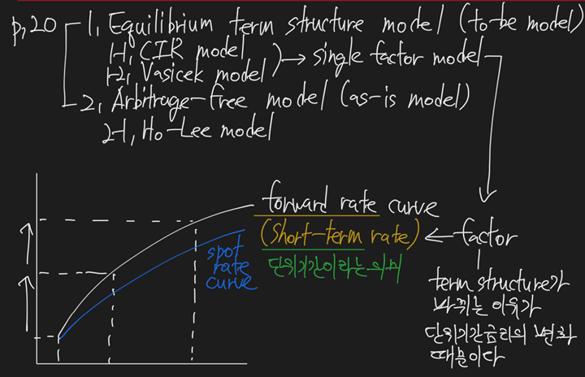
Modern term structure models
Modern interest rate term structure models attempt to capture the statistical properties of interest rates movements and provide us with quantitatively precise descriptions of how interest rates will change.
Equilibrium term structure models.
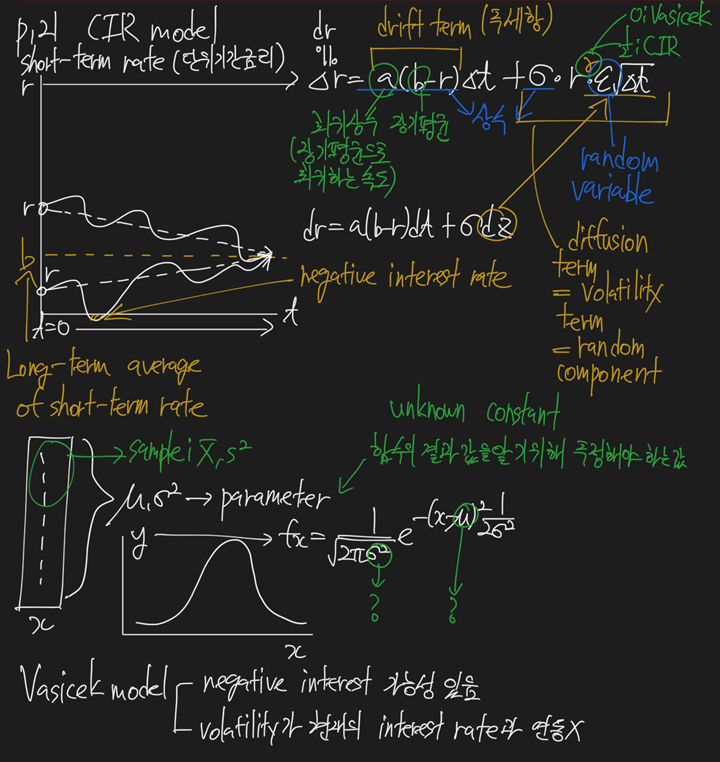
To-be model
Equilibrium term structure models attempt to describe changes in the term structure through the use of fundamental economic variables that drive interest rates.
CIR model, Vasicek model – single factor model
CIR model, Vasicek model 둘 다 drift term, random component로 이루어져있고, Vasicek model은 random component에서 interest rate의 차수가 0, CIR model은 차수가 0.5이다.
CIR model은 negative interest rate을 방지하고, 현재의 금리수준이 금리의 변동성에 영향을 주는 반면, Vasicek model은 negative interest rate이 가능하고, 현재의 금리수준이 금리의 변동성에 영향을 주지 않는다.
Drift term에서 a는 회귀상수, 장기평균으로 회귀하는 속도를 의미
b는 장기평균, r은 연재 금리수준을 의미.
Arbitrage-free models
Arbitrage-free models of the term structure of interest rates begin with the assumption that bonds trading in the market are correctly priced, and the model is calibrated to value such bonds consistent with their market price. These models do not try to justify the current yield curve; rather, they take this curve as given.
As-is model
Calibration – parameter를 추정하는 과정
Benchmark bond를 대상으로 설명하고 있음
LOS 32.l: Explain how a bond’s exposure to each of the factors driving the yield curve can be measured and how these exposures can be used to manage yield curve risks.
Managing yield curve risks
Yield curve risk refers to risk to the value of a bond portfolio due to unexpected changes in the yield curve.
Effective duration
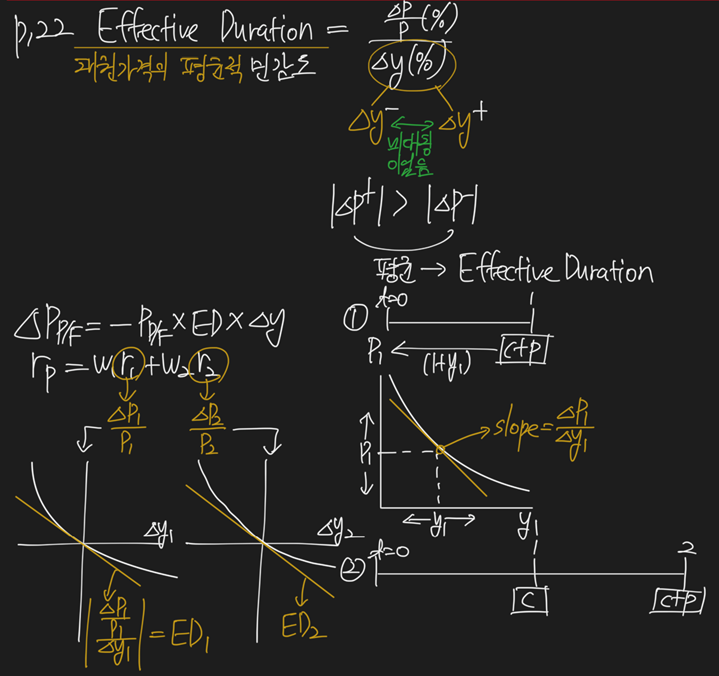
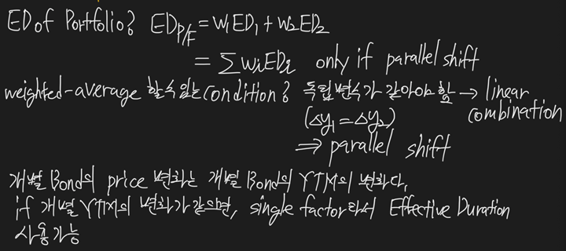
Effective duration은 yield curve가 parallel shift 할 때만 의미있음
Non-parallel shift 하는 경우를 shaping risk라고 부름
Key rate duration
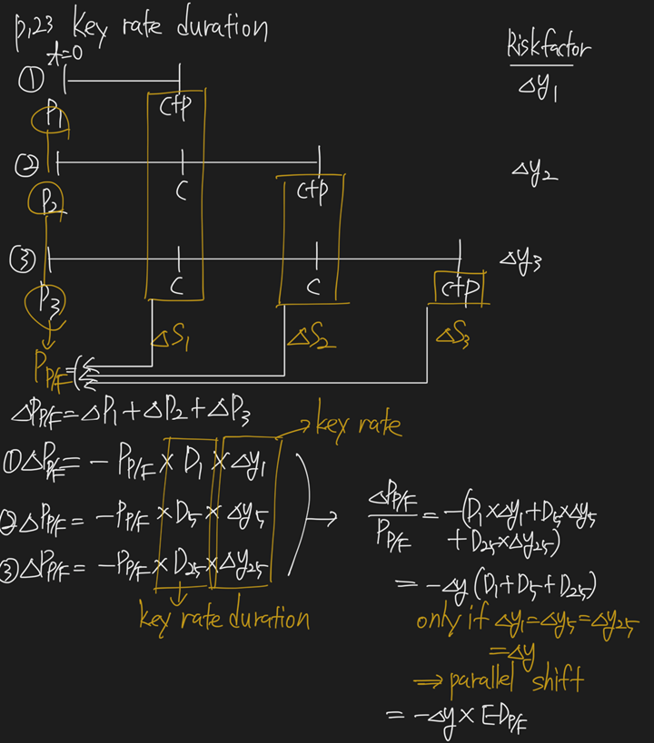
Key rate duration is the sensitivity of the value of a security (or a bond portfolio) to changes in a single pare rate, holding all other spot rates constant. In other words, key rate duration isolate price sensitivity to a change in the yield at a particular maturity only.
Every security or portfolio has a set of key rate durations-one for each key rate.
Key rate duration은 key rate으로 설정한 해당 금리의 변화에 따라 가격이 얼마나 변하는지 나타내는 민감도이다. 만약 해당 금리의 변화가 모두 같으면, Key rate duration들의 합은 effective duration과 같다.
Sensitivity to parallel, steepness, and curvature movements
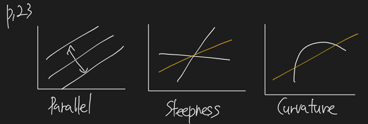
Level – a parallel increase or decrease of interest rates
Steepness – long-term interest rates increase while short-term rates decrease
Curvature – increasing curvature means short- and long-term interest rates increase while intermediate rates do not change.
LOS 32.m: Explain the maturity structure of yield volatilities and their effect on price volatility.
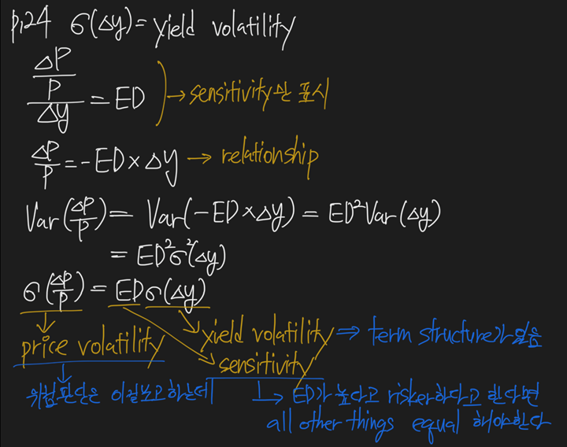
Interest rate volatility becomes particularly important when securities have embedded options, which are especially sensitive to volatility.
Term structure of interest rate volatility – short-term interest rates are generally more volatile than are long-term rates
Volatility at the long-maturity end is thought to be associated with uncertainty regarding the real economy and inflation, while volatility at the short-maturity end reflects risks regarding monetary policy.
LOS 32.a: Explain what is meant by arbitrage-free valuation of a fixed-income instrument.
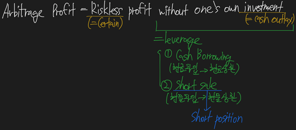
The basic principle of the ‘law of one price’ in freely functioning markets drives this analytical framework.
Arbitrage-free valuation methods value securities such that no market participant can earn an arbitrage profit in a trade involving that security.
Two types – value additivity (when the value of whole differs from the sum of the values of parts) / dominance (when one asset trades at a lower price than another asset with identical characteristics)
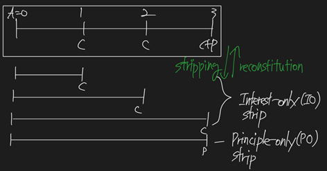
Reconstitution– Interest-only (IO) strip and principle-only (PO) strip to coupon bond
Stripping – coupon bond to IO strip and PO strip
LOS 33.b: Calculate the arbitrage-free value of an option-free, fixed-rate coupon bond.
While we can value option-free bonds with a simple spot rate curve, for bond with embedded options, the path and size of changes in future rates will affect the probability of the option being exercised and the underlying future cash flows.
LOS 33.c: Describe a binomial interest rate tree framework.
The binomial interest rate tree framework assumes that interest rates have an equal probability of taking one of two possible values in the next period (hence the term binomial).
The relationship among the set of rates associated with each individual nodal period is a function of the interest rate volatility assumed to generate the tree. Volatility estimates can be based on historical data or can be implied volatility derived from interest rate derivatives.
The binomial interest rate tree framework is a lognormal random walk model with two desirable properties: (1) higher volatility at higher rates and (2) non-negative interest rates.
Binomial tree
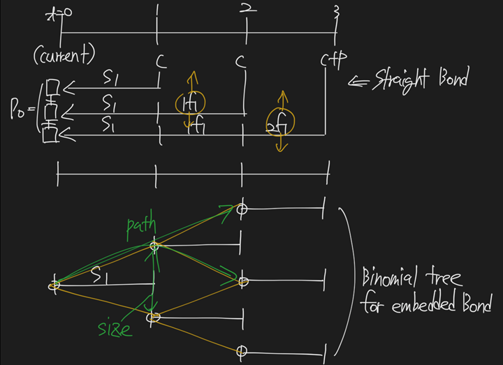
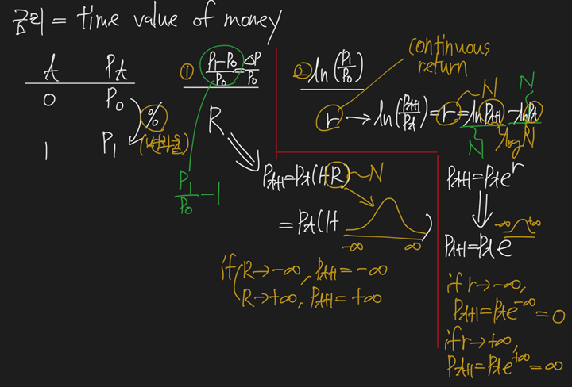
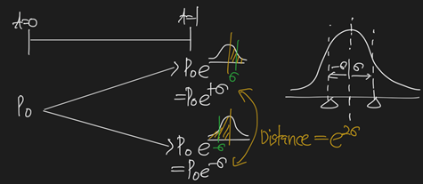
LOS 33.d: Describe the backward induction valuation methodology and calculate the value of a fixed-income instrument given its cash flow at each node.
Because the probabilities of an up move and a down move are both 50%, the value of a bond at a given node in a binomial tree is the average of the present values of the two possible values from the next period. The appropriate discount rate is the forward rate associated with the node.
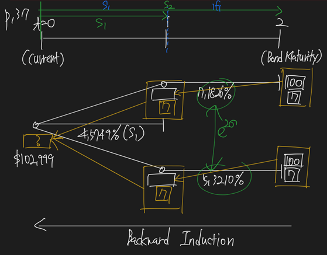
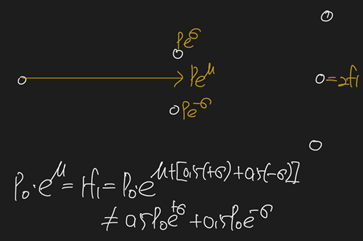
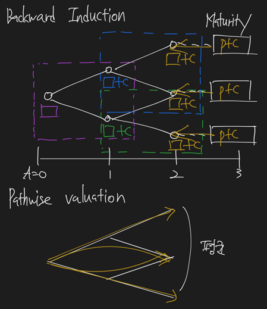
LOS 33.e: Describe the process of calibrating a binomial interest rate tree to match a specific term structure.
Three rules
\1. The interest rate tree should generate arbitrage-free values for the benchmark security. (fair pricing assumption) This means that the value of bonds produced by the interest rate tree must be equal to their market price, which excludes arbitrage opportunities.
\2. Adjacent forward rates (for the same period) are two standard deviations apart.
\3. The middle forward rate (or mid-point in case of even number of rates) in a period is approximately equal to the implied (from the benchmark spot rate curve) one-period forward rate for that period.
LOS 33.f: Compare pricing using the zero-coupon yield curve with pricing using an arbitrage-free binomial lattice.
For bonds with embedded options, the future cash flows are uncertain as they depend on whether the embedded option will be in the money (and hence exercised). Hence, to value bonds with embedded options, we have to allow for rates to fluctuate.
LOS 33.g: Describe pathwise valuation in a binomial interest rate framework and calculate the value of a fixed-income instrument given its cash flows along each path.
For a binomial interest rate tree with n periods, there will be 2^(n-1) unique paths.
LOS 33.h: Describe a Monte Carlo forward-rate simulation and its application.
Path dependency
Unlike call risk, prepayment risk is affected not only by the level of interest rate at a particular point in time, but also by the path rates took to get there.
An important assumption of the binomial valuation process is that the value of the cash flows at a given point in time is independent of the path that interest rates followed up to that point. In other words, cash flows are not path dependent; cash flows at any node do not depend on the path rates took to get to that node. Because of path dependency of cash flows of mortgage-backed securities, the binomial tree backward induction process cannot be used to value such securities. We instead use the Monte Carlo simulation method to value mortgage-backed securities.
A monte Carlo forward-rate simulation involves randomly generating a large number of interest rate paths, using a model that incorporates a volatility assumption and assumed probability distribution. A key feature of the Monte Carlo method is that the underlying cash flows can be path dependent.
As with pathwise valuation, the value of the bond is the average of values from the various paths. The simulated paths should be calibrated so benchmark interest rate paths value benchmark securities at their market price (i.e. arbitrage-free valuation). The calibration process entails adding (subtracting) a constant to all rates when the value obtained from the simulated paths is too high (too low) relative to market prices. This calibration process results in a drift adjusted model.
A Monte Carlo simulation may impose upper and lower bounds on interest rates as part of the model generating the simulated paths. These bounds are based on the notion of mean reversion; rates tend to rise when they are too low and fall when they are too high.
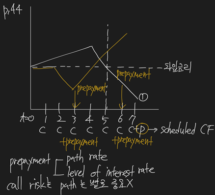
LOS 34.a: Describe fixed-income securities with embedded options.
Callable bonds give the issuer the option to call back the bond; the investor is short the call option.
Putable bonds allow the investor to put (sell) the bond back to the issuer prior to maturity. The investor is long the underlying put option.
Extendible bond allows the investor to extend the maturity of the bond.
Style
European style – whereby the option can only be exercised on a single day immediately after the lockout period
American style – whereby the option can be exercised at any time after the lockout period
Bermudan-style – whereby the option can be exercised at fixed dates after the lockout period
Complex options
- Estate put
- Sinking fund bonds
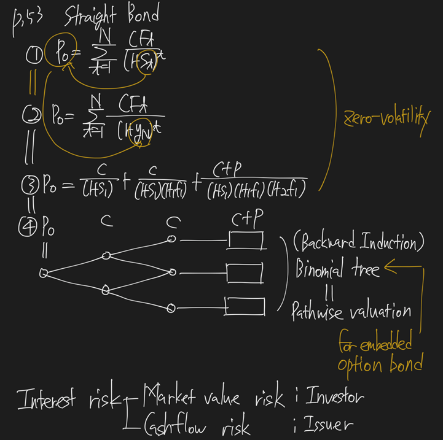
Los 34.b: Explain the relationships between the values of a callable or putable bond, the underlying option-free (straight) bond, and the embedded option.
Value of callable bond = value of straight bond – value of call option on the callable bond
Long callable bond = long straight bond + short call option on the callable bond
Value of putable bond = value of straight bond + value of put option on the putable bond
Long putable bond = long straight bond + long put option on the putable bond
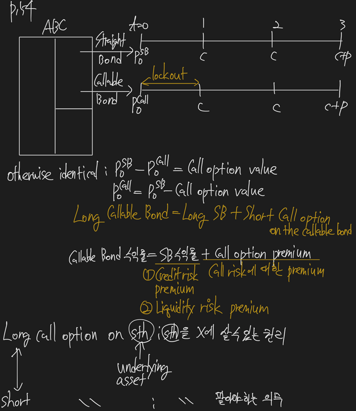
LOS 34.c: Describe how the arbitrage-free framework can be used to value a bond with embedded options.
LOS 34.f: Calculate the value of a callable or putable bond from an interest rate tree.
When valuing a callable bond, the value at any node where the bond is callable must be either the price at which the issuer will call the bond or the computed value if the bond is not called, whichever is lower. This is known as the call rule. Similarly, for a putable bond, the value used at any node corresponding to a put date must be either the price at which the investor will put the bond or the computed value if the bond is not put, whichever is higher. This is known as the put rule.
LOS 34.d: Explain how interest rate volatility affects the value of a callable or putable bond.
Option values are positively related to the volatility of their underlying. Accordingly, when interest rate volatility increases, the values of both call and put options increase. The value of a straight bond is affected by changes in the level of interest rates but is unaffected by changes in the volatility of interest rates.
When interest rate volatility increases, the value of a callable bond decreases and the value of a putable bond increases.
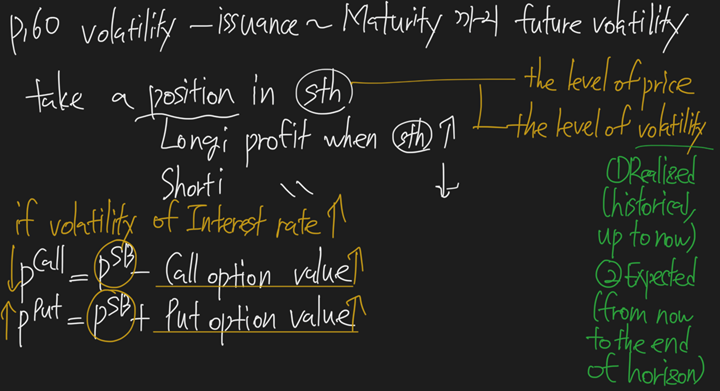
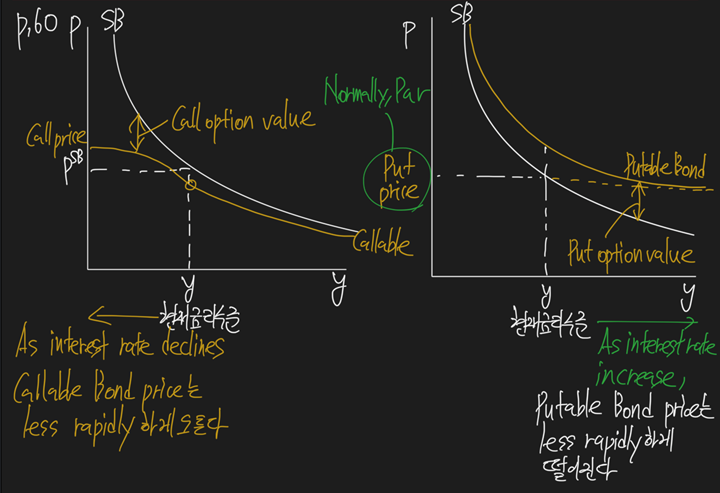
LOS 34.e: Explain how changes in the level and shape of the yield curve affect the value of a callable or putable bond.
Level of interest rates
As interest rates decline, the value of a callable bond rises less rapidly than the value of an otherwise-equivalent straight bond. As interest rates increase, the value of a putable bond falls less rapidly than the value of an otherwise-equivalent straight bond.
Call option on a bond value is inversely related to the level of interest rates, while put option on a bond value varies directly with the level of interest rates.
Shape of the yield curve
As an upward-sloping yield curve becomes flatter, the call option value increases. Put option value therefore declines as an upward-sloping yield curve flattens.
LOS 34.g: Explain the calculation and use of option-adjusted spreads.
The OAS is added to the tree after the adjustment for the embedded option. Hence the OAS is calculated after the option risk has been removed. – call/put rule로 인해 option risk가 제거됨. 그냥 OAS만큼 트리 전체를 올렸다 내렸다하는 것
OAS is used by analysts in relative valuation; bonds with similar credit risk should have the same OAS. If the OAS for a bond is higher than the OAS of its peers, it is considered to be undervalued and hence an attractive investment. Conversely, bonds with low OAS relative to peers are considered to be overvalued.
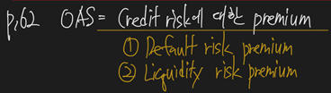
LOS 34.h: Explain how interest rate volatility affects option-adjusted spreads.
The OAS calculated varied depending on the volatility assumption used. When we use a higher estimate of volatility to value a callable bond, the calculated value of the call option increases, the calculated value of the straight bond is unaffected, and the computed value (not the market price) of the callable bond decreases (since the bondholder is short the option). Hence when the estimated (or assumed) volatility (of benchmark rates) used in a binomial tree is higher, the computed value of a callable bond will be lower-and therefore closer to its true market price. The constant spread that needs to be added to the benchmark rates to correctly price the bond (the OAS) is therefore lower.
As the assumed level of volatility used in an interest rate tree increases, the computed OAS (for a given market price) for a callable bond decreases. Similarly, the computed OAS of a putable bond increases as the assumed level of volatility in the binomial tree increases.
| Assumed level of volatility | Risk-free value | OAS callable | OAS putable | |||
|---|---|---|---|---|---|---|
| calls | puts | callable | Putable | |||
| High | high | high | low | High | low | High |
| Low | low | low | high | low | high | Low |
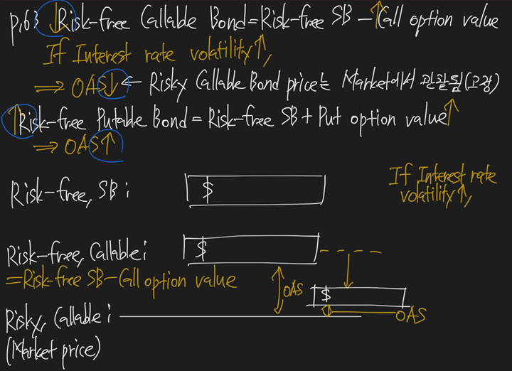
LOS 34.i: Calculate and interpret effective duration of a callable or putable bond.
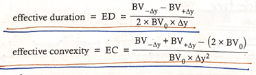
\1. Given assumptions about benchmark interest rates, interest rate volatility, and any calls and/or puts, calculate the OAS for the issue using the current market price and the binomial model.
\2. Impose a small parallel shift in the benchmark yield curve by an amount of equal to delta y.
\3. Build a new binomial interest rate tree using the new yield curve.
\4. Add the OAS from step 1 to each of the one-year rates in the interest rate tree to get a modified tree.
\5. Compute estimated price if yield increases by delta y using this modified interest rate tree.
\6. Repeat step 2 through 5 using a parallel rate shift of delta y to obtain a value of estimated price if yield decreases by delta y using this modified interest rate tree.
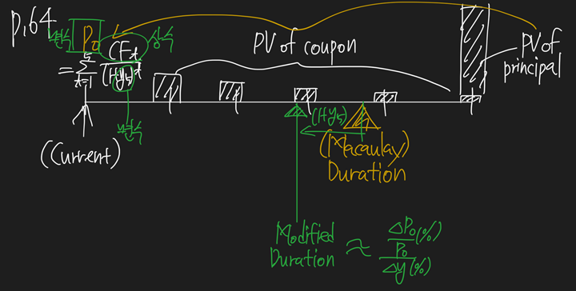
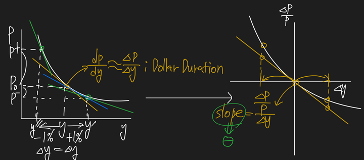
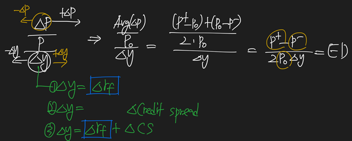
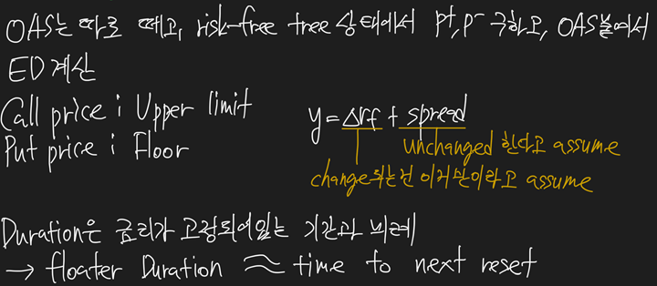
LOS 34.j: Compare effective durations of callable, putable, and straight bonds.
Both call and put options have the potential to reduce the life of a bond, so the duration of callable and putable bonds will be less than or equal to the duration of their straight counterparts.
- Effective duration (callable, putable) <= effective duration (straight)
- Effective duration of floater = time (in years) to next reset
An increase (decrease) in rates would decrease the effective duration of a putable (callable) bond.
LOS 34.k: Describe the use of one-sided durations and key rate durations to evaluate the interest rate sensitivity of bonds with embedded options.
One-sided durations
For bonds with embedded options, one-sided durations-durations that apply only when interest rates rise (or, alternatively, only when rates fall)-are better at capturing interest rate sensitivity than simple effective duration. When the underlying option is at-the-money (or near-the-money), callable bonds will have lower one-sided down-duration than one-sided up-duration: the price change of a callable when rates fall is smaller than the price change for an equal increase in rates. Conversely, a near-the-money putable bond will have larger one-sided down-duration than one-sided up-duration.
Key rate duration
Key rate duration or partial durations capture the interest rate sensitivity of a bond to changes in yields (par rates) of specific benchmark maturities. Key rate duration is used to identify the interest rate risk from changes in the shape of the yield curve (shaping risk).
Generalization
\1. If an option-free bond is trading at par, the bond’s maturity-matched rate is the only rate that affects the bond’s value. Its maturity key rate duration is the same as its effective duration, and all other rate durations are zero.
\2. For an option-free bond not trading at par, the maturity-matched rate is still the most important rate.
\3. A bond with low (or zero) coupon rate may have negative key rate durations for horizons other than the bond’s maturity.
\4. A callable bond with a low coupon rate is unlikely to be called; hence, the bond’s maturity-matched rate is the most critical rate.
\5. All else equal, higher coupon bonds are more likely to be called, and therefore the time-to-exercise rate will tend to dominate the time-to-maturity rate.
\6. Putable bonds with high coupon rates are unlikely to be put, and thus are most sensitive to their maturity-matched rates.
\7. All else equal, lower coupon bonds are more likely to be put, and therefore the time-to-exercise rate will tend to dominate the time-to-maturity rate.
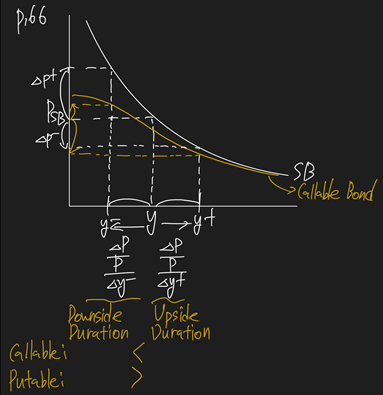
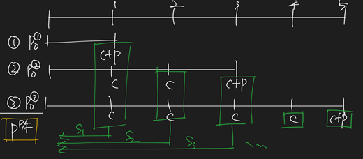
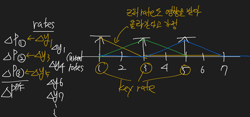
LOS 34.l: Compare effective convexities of callable, putable, and straight bonds.
When the underlying call option is near the money, its effective convexity turns negative. Putable bonds exhibit positive convexity throughout.
LOS 34.m: Calculate the value of a capped or floored floating-rate bond.
A capped floater effectively contains an issuer option that prevents the coupon rate from rising above a specified maximum rate known as the cap.
Value of a capped floater = value of a straight floater – value of the embedded cap
A floored floater has a coupon rate that will not fall below a specified minimum rate known as the floor.
Value of a floored floater = value of a straight floater + value of the embedded floor
We can use the standard backward induction methodology in a binomial interest rate tree to value a capped or floored floater.
LOS 34.n: Describe defining features of a convertible bond.
The owner of a convertible bond has the right to convert the bond into a fixed number of common shares of the issuer during a specified timeframe (conversion period) and at a fixed amount of money (conversion price). Convertibles allow investors to enjoy the upside on the issuer’s stock, although this comes at a cost of lower yield. The issuer of a convertible bond benefits from a lower borrowing cost, but existing shareholders may face dilution if the conversion option is exercised.
The conversion ratio is the number of common shares for which a convertible bond can be exchanged. Initial conversion ratio of 10 allows its holder to convert one $1000 par bond into 10 shares of common stock.
Conversion value = stock-equivalent value
Minimum value of CB = Max(conversion value, straight value)
Market conversion price = BEP stock price
The conversion price of the bond is $1000 / 10 shares = $100.
Offer documents may also provide a contingent put option in the event of any change-of-control events such as mergers. Alternatively, lower conversion price may be specified in the event of a change of control. The conversion ratio may also be adjusted upward if the company pays a dividend in excess of a specified threshold dividend.
LOS 34.o: Calculate and interpret the components of a convertible bond’s value.
Conversion value = market price of stock * conversion ratio
The straight value, or investment value, of a convertible bond is the value of the bond if it were not convertible-the present value of the bond’s cash flows discounted at the return required on a comparable option-free issue.
Minimum value of a convertible bond = max(straight value, conversion value)
Market conversion price = market price of convertible bond / conversion ratio = BEP stock price
Market conversion premium per share = market conversion price – stock’s market price
Market conversion premium은 downside protection으로 인한 premium
Market conversion premium ratio = market conversion premium per share / market price of common stock
Premium over straight value = market price of convertible bond / straight value – 1
All else equal, the greater the premium over straight value, the less attractive the convertible bond.
LOS 34.p: Describe how a convertible bond is valued in an arbitrage-free framework.
Convertible, noncallable bond value = straight value + value of call option on stock
Callable convertible bond value = straight value of bond + value of call option on stock – value of call option on bond
Callable and putable convertible bond value = straight value of bond + value of call option on stock – value of call option on bond + value of put option on bond
LOS 34.q: Compare the risk-return characteristics of a convertible bond with the risk-return characteristics of a straight bond and of the underlying common stock.
Buying convertible bonds instead of stocks limits downside risk; the price floor set by the straight bond value provides this downside protection. The cost of the downside protection is reduced upside potential due to the conversion premium. Keep in mind though, that just like investing in nonconvertible bonds, convertible bond investors must be concerned with credit risk, interest rate risk, and liquidity risk.
The following comparisons can be made between ownership of the underlying stock and the risk-return characteristics of the convertible bond:
- When the stock’s price falls, the returns on convertible bonds exceed those of the stock, because the convertible bond’s price has a floor equal to its straight bond value.
- When the stock’s price rises, the bond will underperform because of the conversion premium. This is the main drawback of investing in convertible bonds versus investing directly in the stock.
- If the stock’s price remains stable, the return on a convertible bond may exceed the stock return due to the coupon payments received from the bond, assuming no change in interest rates or credit risk of the issuer.
Sometimes the price of the common stock associated with a convertible issue is so low that is has little or no effect on the convertible’s market price, and the bond trades as though it is a straight bond. When this happens, the convertible security is referred to as a fixed-income equivalent or a busted convertible.
Bond analytics
\1. Put-call parity
o C – P = PV(forward price of the bond on exercise date) – PV(exercise price)
\2. Option-free bond pricing
o The valuation of option-free bonds should be independent of the assumed level of volatility used to generate the interest rate tree.
LOS 36.a: Describe credit default swap (CDS), single-name and index CDS, and the parameters that define a given CDS product.
A credit default swap (CDS) is essentially an insurance contract.
Protection buyer = long credit risk = short credit
Protection seller = short credit risk = long credit
To obtain this coverage, the protection buyer pays the seller a premium called the CDS premium to the protection seller. The contract is written on a face value of protection called the notional principal.
Even though the CDS spread should be based on the underlying credit risk of the reference obligation, standardization in the market has led to a fixed coupon on CDS product: 1% for investment-grade securities and 5% for high-yield securities. Hence, the coupon rate on the CDS and the actual credit spread may be different. The present value of the difference between the standardization coupon rate and the credit spread on the reference obligation is paid upgront by one of the parties to the contract.
For a protection buyer, a CDS has some of the characteristics of a put option-when the underlying performs poorly, the holder of the put option has a right to exercise the option.
The International Swaps and Derivatives Association (ISDA), the unofficial governing body of the industry, publishes standardized contract terms and conventions in the ISDA Master Agreement to facilitate smooth functioning of the CDS market.
Single-name CDS
In the case of a single-name CDS, the reference obligation is the fixed-income security on which the swap is written, usually a senior unsecured obligation (in the case of a senior CDS). The issuer of the reference obligation is called the reference entity. The CDS pays off not only when the reference entity defaults on any other issue that is ranked pari passu or higher. The CDS payoff is based on the market value of the cheapest-to-deliver (CTD) bond that has the same seniority as the reference obligation.
Contract에 따라 다르지만, credit event의 reference entity
Coverage reference obligation 기준은 same or higher, payoff는 CTD bond (same rank)
Index CDS
An index CDS covers multiple issuers.
The pricing of an index CDS is dependent on the correlation of default (credit correlation) among the entities in the index. The higher the correlation of default among index constituents, the higher the spread on the index CDS.
LOS 36.b: Describe credit event and settlement protocols with respect to CDS.
Credit event
\1. Bankruptcy on the refence entity
\2. Failure to pay all the outstanding debts
\3. Restructuring
\4. Cross default
\5. Obligation acceleration
\6. Moratorium
\7. Repudiation
A 15-member group of the ISDA called the Determinations Committee (DC) declares when a credit event has occurred.
When there is a credit event, the swap will be settled in cash or by physical delivery. With physical delivery, the protection seller receives the reference obligation and pays the protection buyer the notional amount.
In the case of a cash settlement, the payout amount is the payout ratio times the notional principal. The payout ratio depends on the recovery rate.
Payout amount = payout ratio * notional principal
Payout ratio = 1 – recovery rate (%)
LOS 36.c: Explain the principles underlying, and factors that influence, the market’s pricing of CDS.
The factors that influence the pricing of CDS include the 1) probability of default, 2) loss given default. The CDS spread is higher for higher probability of default and for higher loss given default.
Probability of default is the likelihood of default by the reference entity in a given year. However, because the CDS typically covers a multi-year horizon, the probability of default is not constant; the probability of default usually increases over time. For a single-name CDS, when a default occurs, a payment is made by the protection seller to the protection buyer and the CDS ceases to exist. Hence, in the context of a CDS, the probability of default in any given year assumes that no default has occurred in the preceding years. We call the probability of default given that it has not already occurred the conditional probability of default or hazard rate.
Loss given default is the expected amount of loss in the event that a default occurs.
Expected loss at t = hazard rate at t * loss given default
Loss given default (%) = 1 – recovery rate
The cash payments made by the protection buyer on the CDS cease when there is a default. Hence, the expected value of the coupon payments also depends on the hazard rate.
The payments made by the protection buyer to the seller are the premium leg. These contingent payments make up the protection leg.
The difference between the present value of the premium leg and the present value of the protection leg determines the upfront payment.
Upfront payment (by protection buyer) = PV(protection leg) – PV(premium leg)
We can appropriate the upfront premium as the difference between the CDS spread and the CDS coupon rate, multiplied by the duration of the CDS.
Upfront premium % = (CDS spread – CDS coupon) * duration
CDS spread = upfront premium % / duration + CDS coupon
Price of CDS (per $100 notional) = $100 – upfront premium (%)
Valuation after inception of CDS
At inception of a CDS, the CDS spread (and the upfront premium) is computed based on the credit quality of the reference entity. After inception, the credit quality of the reference entity (or the credit risk premium in the overall market) may change. This will lead to the underlying CDS having a nonzero value.
The change in value of a CDS after inception can be approximated by the change in spread multiplied by the duration of the CDS.
Profit for protection buyer = change in spread * duration * notional principal
Profit for protection buyer (%) = change in spread (%) * duration
The protection buyer (or seller) can unwind an existing CDS exposure (prior to expiration or default) by entering into an offsetting transaction. This process of capturing value from an in-the-money CDS exposure is called monetizing the gain.
LOS 36.d: Describe the use of CDS to manage credit exposures and to express views regarding changes in shape and / or level of the credit curve.
Credit curve
The credit curve is the relationship between credit spreads for different bonds issued by an entity, and the bonds’ maturities. The credit curve is similar to the term structure of interest rates. If the longer maturity bonds have a higher credit spread compared to shorter maturity bonds, the credit curve will be upward sloping.
Naked CDS
CDS can be used to manage credit exposures of a bond portfolio. In a naked CDS, an investor with no underlying exposure purchases protection in the CDS market.
Long/Short trade
In a long / short trade, an investor purchases protection on one reference entity while simultaneously selling protection on another (often related) reference entity. The investor is betting that the difference in credit spreads between the two reference entities will change to the investor’s advantage. This is similar to going long (protection seller exposure) in one reference entity bond and simultaneously going short (protection buyer exposure) in the other reference entity bond.
Curve trade
A curve trade is a type of long/short trade where the investor is buying and selling protection on the same reference entity but with a different maturity.
An investor concerned about the credit risk of an issuer in the near term while being more confident of the long-term prospects of the issuer might buy protection in the short-term CDS and offset the premium cost by selling protection in the long-term CDS. Conversely, an investor who is bearish about the reference entity’s prospects in the short term will enter into a curve-flattening trade.
LOS 36.e: Describe the use of CDS to take advantage of valuation disparities among separate markets, such as bonds, loans, equities, and equity0linked instruments.
Earning arbitrage profits is another motivation for trading in the CDS market. Difference in pricing between asset and derivative markets, or differences in pricing of different products in the market, may offer potential arbitrage profits.
Basis trade
A basis trade is an attempt to exploit the difference in credit spreads between bond markets and the CDS market.
Another arbitrage transaction involves buying and selling debt instruments issued by the same entity based on which instruments the CDS market suggests to be undervalued or overvalued.

LBO
In a leveraged buyout (LBO), the firm will issue a great amount of debt in order to repurchase all of the company’s publicly traded equity. This additional debt will increase the CDS spread because default is now more likely. An investor who anticipates an LBO might purchase both the stock and CDS protection both of which will increase in value when the LBO eventually occurs.
Index CDS
In the case of an index CDS, the value of the index should be equal to the sum of the values of the index components. An arbitrage transaction is possible if the credit risk of the index constituents is priced differently than the index CDS spread.
CDO
Collateralized debt obligation (CDO) are claims against a portfolio of debt securities. A synthetic CDO has similar credit risk exposure to that of a cash CDO but is assembled using CDS rather than debt securities. If the synthetic CDO can be created at a cost lower than that of the cash CDO, investors can buy the synthetic CDO and sell the cash CDO, engaging in a profitable arbitrage.
LOS 35.a: Explain expected exposure, the loss given default, the probability of default, and the credit valuation adjustment.
Expected exposure is the amount of money a bond investor in a credit risky bond stands to lose at a point in time before any recovery is factored in. A bond’s expected exposure changes over time.
Recovery rate is the percentage recovered in the event of a default.
Loss given default (LGD) is equal to loss severity multiplied by exposure.
Probability of default is the likelihood of default occurring a given year. The initial probability of default is also known as the hazard rate. The probability of default in each subsequent year is calculated as the conditional probability of default given that default has previously not occurred.
Probability of survival at t = (1 – hazard rate)^t if hazard rate is constant
Credit valuation adjustment (CVA) is the sum of the present value of the expected loss for each period. CVA is the monetary value of the credit risk in present value terms; it is the difference in value between a risk-free bond and an otherwise identical risky bond.
CVA = price of risk-free bond – price of risky bond
Risk neutral probability of default
Risk neutral probability of default, which is the probability of default implied in the current market price.
We can also calculate the implied recovery rate in the market price given the probability of default. In general, given the market price (and hence the credit spread), the estimated risk neutral probabilities of default and recovery rates are positively correlated.
Relative credit risk analysis
While comparing the credit risk of several bonds, the metric that combines the probability of default as well as loss severity is the expected loss. Everything else constant, for a given period, the higher the expected loss, the higher the credit risk.
LOS 35.b: Explain credit scores and credit ratings.
Credit scoring is used for small businesses and individuals. A higher credit score indicates better credit quality.
Credit ratings are issued for corporate debt, asset-backed securities, and government and quasi-government debt. The issuer rating for a company is typically for its senior unsecured debt. Ratings on other classes of debt by the same issuer may be notched. Notching is the practice of lowering the rating by one or more levels for more subordinated debt of the issuer. Notching accounts for LGD difference between classes of debt by the same issuer (higher LGD for issues with lower seniority).
LOS 35.c: Calculate the expected return on a bond given transition in its credit rating.
Credit migration (i.e., change in rating)
LOS 35.d: Explain structural and reduced-form models of corporate credit risk, including assumptions, strengths, and weaknesses.
Structural models
Structural models of corporate credit risk are based on the structure of a company’s balance sheet and rely on insights provided by option pricing theory.
Option analogy
Consider a hypothetical company with assets that are financed by equity and a single issue of zero-coupon debt.
Due to the limited liability nature of corporate equity, the shareholders effectively have a call option on the company’s assets with a strike price equal to the face value of debt.
An alternate, but related interpretation considers equity investors as long the net assets of the company and long a put option, allowing them to seel the assets at an exercise price of X. default is then synonymous to exercising the put opition.
Under the put option analogy, the investors in risky debt can be constructed to have a long position in risk-free debt and a short position in that put option.
Value of risky debt = value of risk-free debt – value of put option
Value of risky debt = value of risk-free debt – CVA
The value of the put option = CVA
If the value of assets falls below the default barrier X, the company defaults. The probability of default is indicated by the region in the left tail below the default barrier of X.
Advantages of structural models
- Structural models provide an economic rationale for default and explain why default occurs.
- Structural models utilize option pricing models to value risky debt.
Disadvantages of structural models
- Because structural models assume a simple balance sheet structure, complex balance sheets cannot be modeled. Additionally, when companies have off-balance sheet debt, the default barrier under structural models (X) would be inaccurate and hence the estimate outputs of the model will be inaccurate.
- One of the key assumptions of the structural model is that the assets of the company are traded in the market. This restrictive assumption makes the structural model impractical.
Reduced form models
Reduced form (RF) models do not rely on the structure of a company’s balance sheet and therefore do not assume that the assets of the company trade. Unlike the structural model, reduce form models do not explain why default occurs. Instead, they statistically model when default occurs. Default under the RF model is a randomly occurring exogenous variable.
A key input into the RF model is the default intensity, which is the probability of default over the next (small) time period. Default intensity can be estimated using regression models.
Advantages of reduced form models
- RF models do not assume that the assets of a company trade
- Default intensity is allowed to vary as company fundamentals changes, as well as when the state of the economy changes.
Disadvantages of reduced form models
- RF models do not explain why default occurs.
- Under RF models, default is treated as a random event, but in reality, default is rarely a surprise.
Los 35.e: Calculate the value of a bond and its credit spread, given assumptions about the credit risk parameters.
Credit spread on a risky bond = YTM of risky bond – YTM of benchmark
Value given no default (VND) is calculated using the risk-free rate to value the risky bond.
We use our standard backward induction process to value a risky bond given the benchmark rate tree.
Once the expected exposure for each period is calculated, given an estimated unconditional probability of default and a recovery rate, we use the same method discussed earlier to calculate the CVA for the bond.
LOS 35.f: Interpret changes in a credit spread.
A benchmark yield should be equal to the real risk-free rate plus expected inflation as well as a risk-premium for uncertainty in future inflation. Credit spreads include compensation for default, liquidity, and taxation risks relative to the benchmark. Adjustment to the price for all these risk factors together is known as the XVA. Default risk component is the most important and most-commonly-used in practice.
Credit spreads change as investor perceptions about the future probability of default and recovery rates change. These perceptions depend on expectations about the state of the economy. Expectations of impending recessions lead to expectations of higher defaults and lower recovery rates.
LOS 35.g: Explain the determinants of the term structure of credit spreads and interpret a term structure of credit spreads.
The term structure of credit spread shows the relationship between credit spreads and maturity.
The credit spread is inversely related to the recovery rate and positively related to the probability of default. However, oftentimes a maturity-matched, liquid benchmark security is not available. In such cases, interpolation from available benchmark securities is used. When such data is not easily available, or when benchmark bonds are thinly traded, a spread relative to a swap fixed rate (corresponding to the maturity of the bond) may be used.
To create a spread curve, all of the bonds whose spreads are used should have similar credit characteristics.
Key determinants of the shape of the credit spread curve include expectations about future recovery rates and default probabilities. If default probabilities are expected to be higher or recovery rates lower in the future, the credit curve would be expected to be positively sloped. Flat credit curves indicates stable expectations over time.
Determinants of term structure of credit spreads
\1. Credit quality – lower-rated sectors tend to have steeper spread curves, reflecting greater uncertainty as well as greater sensitivity to the business cycle.
\2. Financial conditions – spreads narrow during economic expansions and widen during cyclical downturns. During boom times, benchmark yields tend to be higher while credit spreads tend to be narrower.
\3. Market demand and supply – recall that a credit spread includes a premium for lack of liquidity. Hence, less liquid maturities would show higher spreads (even if the expectations for that time period are stable). Due to low liquidity in most corporate issues, the credit curves are most heavily influenced by more heavily traded bonds.
\4. Equity market volatility – increases in equity volatility therefore tend to widen spreads and influence the shape of the credit spread curve.
LOS 35.h: Compare the credit analysis required for securitized debt to the credit analysis of corporate debt.
Components of credit analysis of secured debt
Collateral pool
Credit analysis of structured, securitized debt begins with the collateral pool. Homogeneity of a pool refers to the similarity of the assets within the collateral pool. Granularity refers to the transparency of assets within the pool. A highly granular pool would have hundreds of clearly defined loans, allowing for use of summary statistics as opposed to investigating each borrower.
Short-term granular and homogeneous structured finance vehicles are evaluated using a statistical-based approach. Medium-term granular and homogeneous obligations are evaluated using a portfolio-based approach because the portfolio composition varies over time. (segmentation해서 analysis) discrete and non-granular portfolios have to be evaluated at the individual loan level.
Servicer quality
Servicer quality is important to evaluate the ability of the servicer to manage the origination and servicing of the collateral pool.
Structure
Structure determines the tranching or other management of credit and other risks in a collateral pool.
Internal / external credit enhancement
A special structure is the case of covered bond. – loan을 true sale하지 않고, 담보로 structuring, 해당 loan들은 balance sheet에서 segregated
Issued by a financial institution, covered bonds are senior, secured bonds backed by a collateral pool as well as by the issuer.